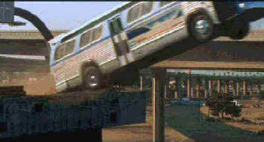

Fox/1994/115m/WS 2.35
Speed packs three rides into one. It opens with a spectacularly shot elevator hijack hostage situation that serves to introduce the forces for good and evil. It follows with the extended bomb in a bus sequence that serves as the heart of the film and finishes with a walloping underground subway eruption. The set design for the elevator sequence is fabulous, serving brilliantly as the backdrop for the exciting opening credits and the sight of a subway car angrily protruding through the pavement has been delivered with maximum visual aplomb.
Excitement is the keynote, and the film delivers non-stop action is helpings rendered at a pace to insure that a minimum amount of time is left for audiences to ponder plot credibility. The masterful editing emphasizes all the aspects of danger and is complimented by powerful scoring from composer Mark Mancina. Director of photography, Andrzej Bartkowiak, works in perfect harmony with director De Bont to produce images with a breathless palette of superior visual impact.
 |
| Don't worry, it's not the Magic School Bus©Fox |
The lead
performances by Keanu Reeves, Sandra Bullock and Dennis Hopper serve the action well.
Reeves’ cool, disinterested screen style molds perfectly into SWAT policeman Jack
Traven. He performs all the physical screen duty asked of him with convincing verve and
stands up nicely to his romantic banter and loving clinches with Sandra Bullock. Bullock
is quite hilarious as Annie, recruited in desperation to drive the speeding bus through
any and every obstacle confronting it. Bullock’s facial expressions behind the wheel
embellish the action beautifully. Hopper, in the role of bad bomber Howard Payne, adds
nothing new to the lexicon of villainous screen portrayals, but he does keep the explosive
character of Payne under control when going too far over the crest of evil may have
diminished the effectiveness of the film.
The non-stop motion of Speed is a good test for any
imaging medium. There are some soft scenes, probably as a result of the motion, however
the action proceeds with such frenetic energy that the disc seems to blaze past any
obvious artifacts of video motion. Unfortunately, there is another problem that is obvious
and can't be ignored. This is one DVD born in "straight line Hell." Every
straight or diagonal lines is enhanced to the point of break-up. Jagged surfaces
are the rule, not the exception. Yet, despite this evidence of sharpness cranking, there
are not halos surrounding images presented in high contrast transitions. The explosions
look and feel terrific, with both dynamic video and audio presentation. The Dolby Digital
5:1 surround mix is aggressive and directional. Every explosion, blown tire, screeching
turn, grinding of metal road dividers, comes to life with thrilling impact on this bang.
The DVD package incorrectly lists the aspect ratio as 1.85, but it is presented in all of
its 2.35 glory.